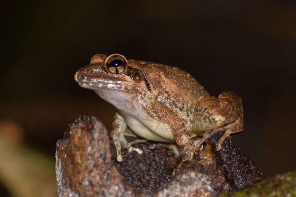

Wildlife Watch
"Know Your State"
The lion-tailed macaque is an Old World monkey endemic to the Western Ghats of South India. Karnataka has the world’s largest population of lion-tailed macaques (LTMs) with 41 groups of 730 individuals, according to a study by the Karnataka Forest Department and Coimbatore-based Salim Ali Centre for Ornithology and Natural History (SACON).Lion-Tailed Macaque Sanctuary, spread across Shivamogga and Uttara Kannada districts.These are the indicators of evergreen forests as they prefer canopy and are rarely seen on ground.
Indirana gundia, is a species of frog found in the Western Ghats of India.It is only known from its type locality, Kempholey, Karnataka The species is terrestrial, residing in moist tropical forest. They breed on wet rocks near streams. The tadpoles are finless and they scour wet rock surfaces next to streams for algae and other organic material to eat. Adults are likely to eat small to medium sized invertebrates in the leaf litter The frog's range includes some protected parks: Bhadra Tiger Reserve, Kudremukh National Park.
There are over 4500 species of flowering plants (38% endemic) 330 butterflies (11% endemic), 156 reptiles (62% endemics) 508 species birds (4% endemics) 150 mammals (12% endemics) 289 fishes (41% endemics) 135 amphibians (75% endemics) are among the known biodiversity of Western Ghats.
Asian Elephant is the state animal of Karnataka. Its Scientific Name is Elephas maximus. They are found in India and Southeast Asia. Asian elephants are Asia's biggest land animals.